Checking your license...
ORB Pro (Knightfall) for NinjaTrader
Your license, your download and everything you need to install it. Licenses are tied to the email you log into NinjaTrader with.
Set it up, start to finish
About 10 minutes. Four stages. Do it once.
- 01InstallDownload the zip. Tools → Import → NinjaScript Add-On. Restart.
- 02Chart settingsMerge non back adjusted. 5 min, Last, 365 days, ETH. Save as default.
- 03Add the strategyCheck Variant, Risk, DLL, Auto Trade, Account. Enable. Save workspace.
- 04Check and go liveDashboard clean. Watch it on Sim first. Then live.
What you need
- NinjaTrader 8, version 8.1 or later. A free NinjaTrader account works.
- An active license on the same email you log into NinjaTrader with. Your license card above shows which email it's on.
- MNQ or NQ futures data from a connected data feed or broker.
- An account to run it on. Start on Sim101. Move to a live or prop account only after you've watched it run.
Don't have NinjaTrader yet? Create a free NinjaTrader account. Affiliate link. FSD-X may earn a commission.
1. Install
- Download the .zip above. Don't unzip it.
- In the NinjaTrader Control Center, go to Tools → Import → NinjaScript Add-On.
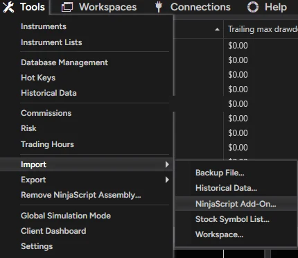
- Select the .zip and click Open. Confirm the import message.
- Restart NinjaTrader. Your license is checked when you log in.
2. Chart settings
Don't skip this step. Grades, stops and targets depend on these exact settings. Wrong data = wrong trades.
| Setting | Value | Where |
|---|---|---|
| Merge policy | Merge non back adjusted | Tools → Settings → Market data |
| Instrument | MNQ or NQ, current front month | Chart → Data Series |
| Price based on | Last | Data Series |
| Bar type | Minute, value 5 | Data Series |
| Load data based on | Days | Data Series |
| Days to load | 365 | Data Series |
| Trading hours | CME US Index Futures ETH | Data Series |
A. Set the merge policy (once per install)
- In the Control Center, open Tools → Settings (called Options in some builds), then Market data.
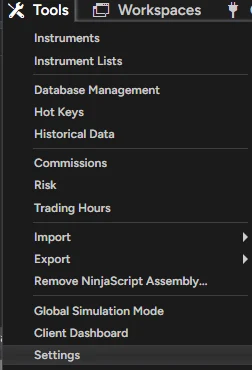
- Under Historical, set Global merge policy to Merge non back adjusted. Leave Get data from server ticked.
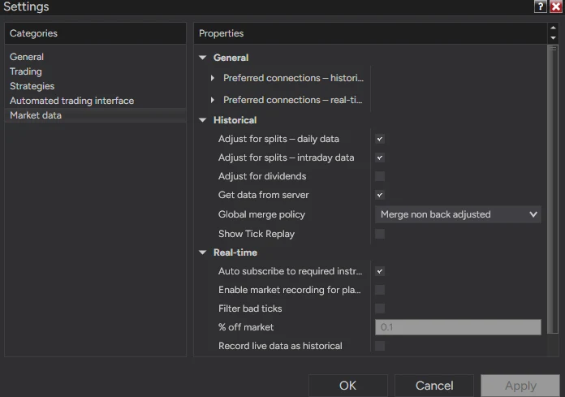
- Click OK. If a chart is already open, right-click it → Reload All Historical Data (Ctrl+Shift+R).
B. Set up the chart
- Open a chart: New → Chart in the Control Center, and pick MNQ or NQ, current front month.
- Right-click the chart → Data Series… (Ctrl+F).
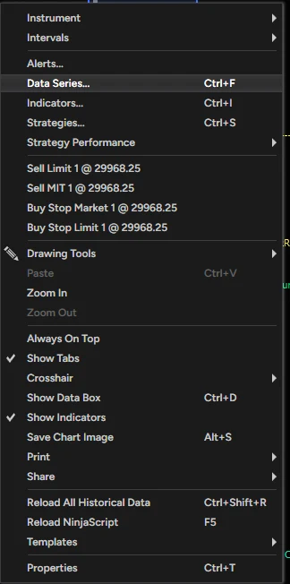
- Set every value from the table above: Last, Minute, 5, Days, 365, CME US Index Futures ETH. Leave End date on today.
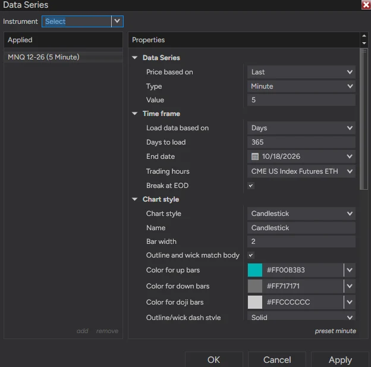
- Click OK. Give it a moment to load a full year of 5-minute bars.
C. Save it so it always loads right
- Save the Data Series as your default. In the Data Series window, click preset at the bottom right → Save as default. New 5-minute charts now open with 365 days and ETH.
- Save the workspace. After the strategy is added (step 3), go to Control Center → Workspaces → Save Workspace. NinjaTrader reopens this chart with these settings next time.
- Each new session, glance at the dashboard. If it shows a red WARMING UP or ETH warning, the chart isn't on these settings.
Why 365 days: the strategy reads a 4-hour trend, a 5-day ORB average and a 14-day volatility average. A short chart gives wrong grades and targets. The dashboard shows WARMING UP in red until enough history loads.
3. Add the strategy
- Right-click the chart → Strategies… (Ctrl+S).
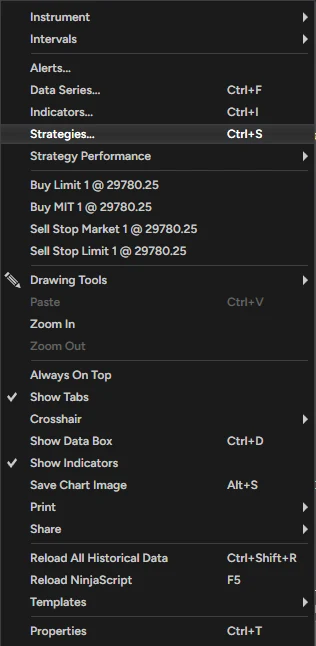
- Under Available, double-click KnightfallORB. It moves to Configured and its settings open on the right, starting with 0. Variant and 1. Risk Management.
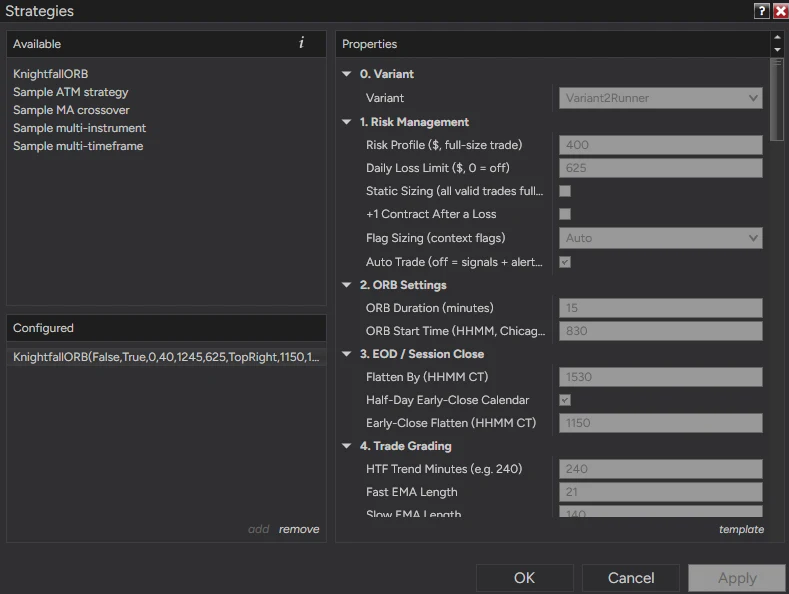
- Before you enable, check these five:
- Variant: loads as Variant 2 Runner. Keep it unless you have a reason to change it.
- Risk Profile ($): loads at $250. Change it to fit your account (recommended settings).
- Daily Loss Limit ($): loads at 0 (off). Set it: $500 at $250 risk, $625 at $400, about 1.5–2× risk otherwise.
- Auto Trade: on = it places and manages the trades for you. Off = signals only (popup and sound with direction, grade, contracts, entry, stop and TP1), and you place the trade yourself.
- Account: the exact account it will trade. Use Sim101 first. On a fleet, double-check you picked the right one.
- Leave Start behavior on Wait until flat. If you enable it mid-session, it waits instead of jumping into a trade already running.
- Scroll to the bottom of the settings. Tick Enabled, then click OK. Leave the rest of the NinjaTrader defaults (Calculate, Order handling) as they are.
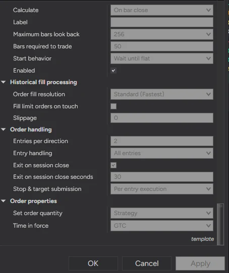
- Save your workspace: Control Center → Workspaces → Save Workspace. The chart, its data settings and the strategy reload together next time.
Changing settings restarts the strategy. If the chart markings disappear, open Strategies and check Enabled is still ticked.
One strategy per account. Don't place manual trades on an account it's trading. For several accounts, enable it on each one or use a trade copier.
4. Check and go live
- Check the dashboard: v1.4.3 in the header, your variant and risk in the config strip, the right account, and no red warning rows. Reading the dashboard →
- Run it on Sim101 first for at least a few sessions. Check entries, stops, targets and the 3:30 PM flatten.
- Keep NinjaTrader running and connected during the session. It only manages trades while it's running. A VPS is recommended.
- Built-in safety: flattens at 3:30 PM CT (and before half-day closes), NinjaTrader's session-close exit runs as a backup, and if an order is rejected it cancels, flattens, turns itself off and alerts you.
- Rollover: a red ROLLOVER warning shows about 8 days before expiry. Switch the chart to the next contract month and re-enable.
- You're responsible for your account. Watch it, especially the first weeks. Check your prop firm's rules on automation before running it there.
Recommended settings
Defaults, what we run, and every setting explained.
Defaults and what we run
What loads by default, what we run, and how to size it for your account. You set these in the Strategies window (Setup step 3).
When you first add KnightfallORB, you get:
The defaults are ready to run except the Daily Loss Limit. Set that before you enable.
What we run on V2 Runner. Change the risk to fit your account size.
| Risk Profile | Daily Loss Limit | Flag Sizing |
|---|---|---|
| $250 | $500 | Auto (off) |
| $400 | $625 | Auto (on) |
| Other sizes | About 1.5–2× your risk | Auto (on from $400) |
Side lock on. Same rule if you run V1. Pick the risk where the backtest drawdown fits your account. Size it on the results page →
Variants and every setting
Settings are grouped in order: 0. Variant first, then 1. Risk Management. Variant picks how the strategy exits and locks the rest of the strategy settings to tested values. Every variant runs the New York open: 8:30 CT, 15-minute ORB. Risk, sizing, the daily loss limit, the side lock, Auto Trade and every display setting always stay yours.
Since v1.4.3, settings a variant locks are tagged · Custom only or · Custom / V3 in their name. In V1, V2 and V3 they have no effect. The Locked To line under Variant says what is locked.
| Variant | What it does |
|---|---|
| V2 Runner | What we run. Full size to TP2 with a trailing stop that starts at TP1 (60 pt distance, TP2 min R:R 2, TP offsets 25). Flag Sizing Auto (on at $400+). Selected by default when you first add the strategy. |
| V1 Stock | The original Knightfall. Takes profit at TP1. |
| V3 Fixed Stop | Experimental. Every stop is the Fixed SL (default 30 pts) and the exit settings stay editable. It tested worse than V2 on the New York session; it's here for other sessions and markets. |
| Custom | Every setting is editable. Starts at the V1 values. For your own testing. |
The No-Hedge ORB Cap is locked on in V1, V2 and V3: a stop never sits past the far edge of the opening range. That means accounts running different variants can never be long and short at the same time. Only Custom can turn it off.
| Your settings | Default | What it does |
|---|---|---|
| Auto Trade | On | On = places live orders. Off = signals only: a popup and sound with direction, grade, contracts, entry, stop and TP1. You place the trade yourself. |
| Risk Profile ($, full-size trade) | 250 | Dollar risk on a full-size trade. Used to size each trade. Contract value is read from the instrument: MNQ or NQ, nothing to set. |
| Daily Loss Limit ($) | 0 (off) | Set your own. Stops new entries for the rest of the day once closed losses reach this amount. Never closes an open trade. We use about 1.5–2× risk. |
| Flag Sizing | Auto | Halves size when 2 or more warning flags show on a breakout, never below 1 contract. Never skips a trade. Auto = on in V1 and V2 when Risk Profile is $400 or more, off below $400, always off in V3 and Custom. Off and Half At 2 Flags force it either way. |
| Lock Side If First Breakout Fails Gate | On (every variant) | If the first breakout of the day on a side fails the evidence gate, that side is done for the session. The dashboard shows the reason. Variants never lock this one, so you can turn it off in any variant. |
| Static Sizing | Off | On = every valid trade gets full size regardless of grade |
| +1 Contract After a Loss | Off | Adds one contract to the next trade after a loss |
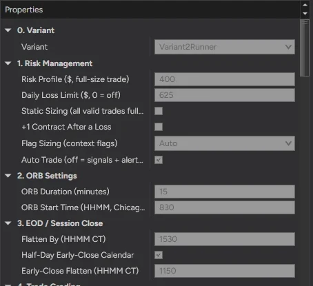
Locked by every variant: ORB 8:30–8:45 CT, Minimum Grade C, Max Trades Per Session 3, Entry Cutoff 12:45 PM CT, Flatten By 3:30 PM CT (11:50 AM on half-days). Display settings only change what's drawn. They never affect trades. Every locked value →
Every locked value, by variant
Want to test your own version? Set Variant to Custom and start from a tested column. Every value V1, V2 and V3 lock, with the same names as the settings window, is on one page for NinjaTrader and TradingView.
Trail Mode (Custom and V3)
V2 sets its own trail. In V1 the trail is off. These settings only apply in Custom and V3. Backtest any change before you use it live.
| Setting | Default | What it does |
|---|---|---|
| Trail Mode | Off | Off: stop stays put. BreakevenOnly: moves the stop to entry once the trigger is hit. TrailOnly: trails the stop behind price. BreakevenThenTrail: breakeven first, then trails. |
| Trigger Units | Points | Points, % of the distance to TP1, or % of the distance to TP2 |
| Breakeven Trigger | 40 | How far in profit before the stop moves to entry |
| Breakeven Offset | 0 | Points past entry to place the breakeven stop |
| Trail Trigger | 50 | How far in profit before trailing starts |
| Trail Distance | 30 | How far behind price the trailing stop sits |
Reading the dashboard
What each row and chart marking means.
Dashboard and chart
The dashboard sits top right. Red rows at the top are warnings. Fix them before trading.
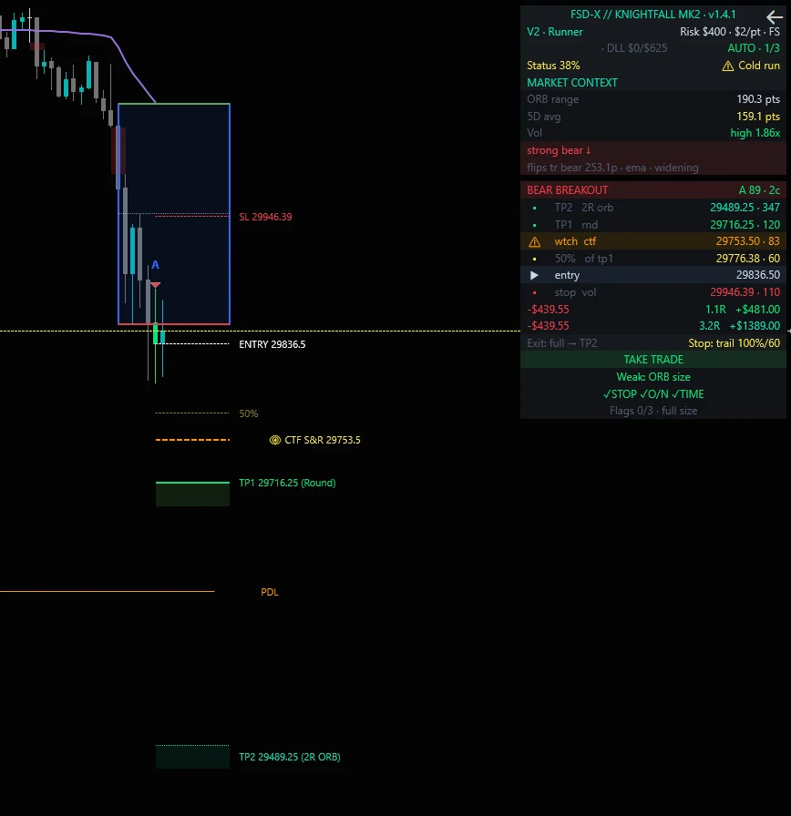
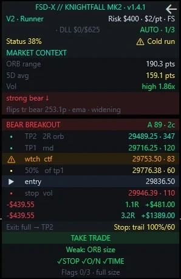
| Row | What it shows |
|---|---|
| Header | Strategy name and version (v1.4.3). Match it to the version on this page. |
| Config strip | Variant (with locked, or exits live in V3) · Risk Profile · $/pt · FS when Flag Sizing is on · GL off when the side lock is turned off |
| Account row | The account it's trading (check it's the right one) · DLL closed loss today / your limit, e.g. DLL $0/$625 · AUTO or MANUAL · trades today out of 3. The DLL turns yellow with low or high when the limit is under 1.5× or over 2.5× your Risk Profile. A sizing hint, not an error. |
| Status | Win rate of the last 40 trades against the normal 52–72% band: Normal, Cold run or Hot run. Information only. It never changes size or stops trading. |
| ORB range | Size of today's opening range (8:30–8:45 CT), in points |
| 5D avg | Average ORB of the last 5 sessions. Green = ideal band, yellow = outside it, red = extreme |
| Trend row | The 4-hour trend. [shift?] means the current 4-hour bar is leaning toward a different state |
| Breakout header | Direction, grade, score and contracts at your risk setting |
| Flag rows | Which warning flags are showing (STOP: a prior day/week level inside the stop · O/N: overnight move against the 4H trend · TIME: entry 15–60 min after the ORB), the count out of 3, and the size result, e.g. Flags 2/3 · HALF 2→1c |
| TP1 / TP2 / stop | Levels, what set them and distance in points. The dollar rows show the stop loss and each target's R and dollar amount at your size. |
| Exit row | How the variant exits, e.g. Exit: full → TP2 and Stop: trail 100%/60 in V2 |
| TAKE TRADE / NO TRADE | Whether the setup passes every rule, with the reason underneath |
| Side lock | Shows when a side is locked for the day and why: grade, counter-trend, ranging or below-gate |
Live preview: while the breakout candle is still forming, the grade, levels and verdict update live, and the candle is colored by its current grade. The grade is final when the candle closes. That's when the strategy enters. If price falls back inside the range first, the preview clears.
| Marking | Meaning |
|---|---|
| Blue box | Today's opening range. High in green, low in red |
| Triangle + letter | A breakout and its grade (A+ to F) |
| Colored candle | A tradeable setup: lime A+/A, green B+/B, yellow C+/C. No color = not valid |
| White / red dashed | Entry and stop |
| Green line + box | TP1 |
| Teal dotted line + box | TP2 |
| Yellow dashed | 50% of the way to TP1 |
| Orange dashed | Watch level |
| Faded short stubs | Levels of your open trade after a newer breakout moved the main lines |
One setup is drawn at a time. Setup lines clear at the 5 PM CT session roll.
Troubleshooting
Fixes for the common setup problems.
Common questions
Tap a question.
Still stuck?
Send a screenshot of the problem and your NinjaTrader email.
Updates
Release notes, how to update, and older versions.
What's new
No release published yet.
How to update
- When a new version is out, you'll see Update available at the top of this page.
- Download it, then Tools → Import → NinjaScript Add-On and pick the new zip. Say yes to replace.
- Restart NinjaTrader. Your license carries over.
- Remove the strategy from the chart and add it again so the new defaults load. Check Variant, Risk Profile and Daily Loss Limit before you enable it.
- Save the workspace again (Workspaces → Save Workspace).
Previous versions
Only use an older version if support asks you to.